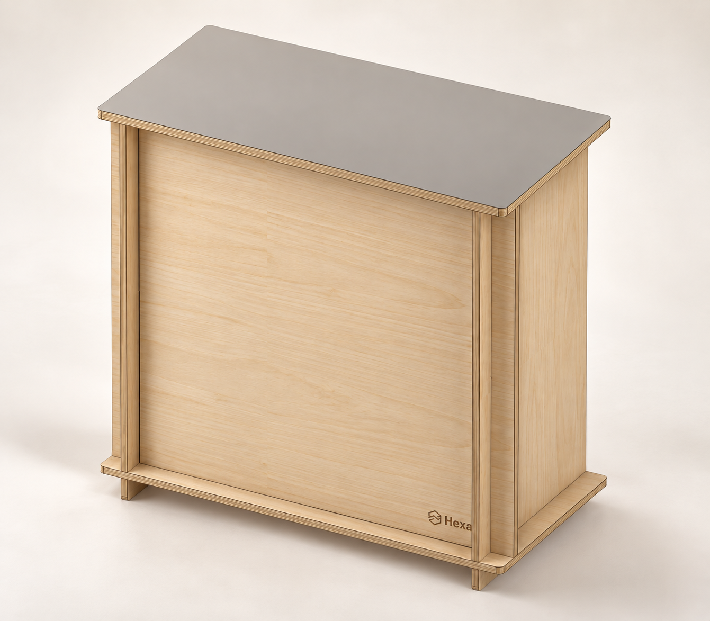
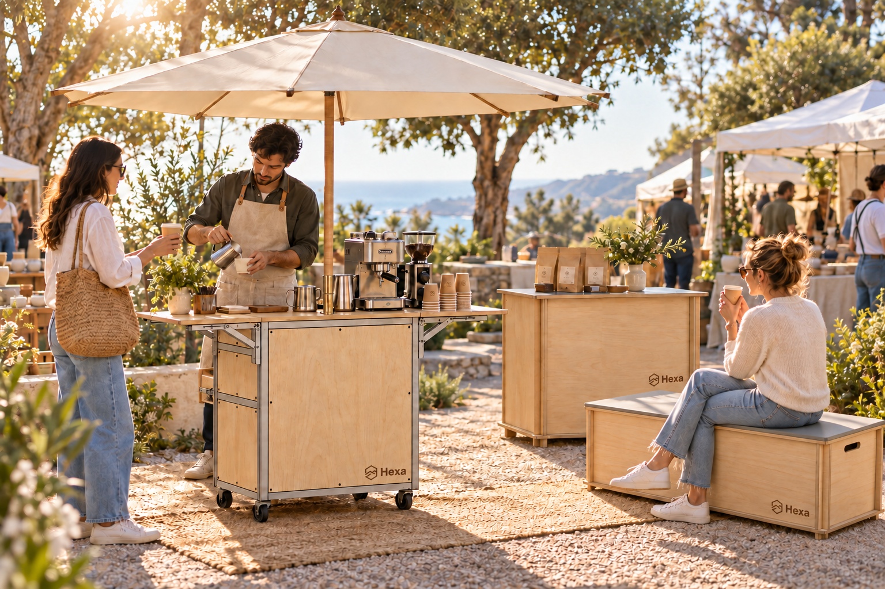
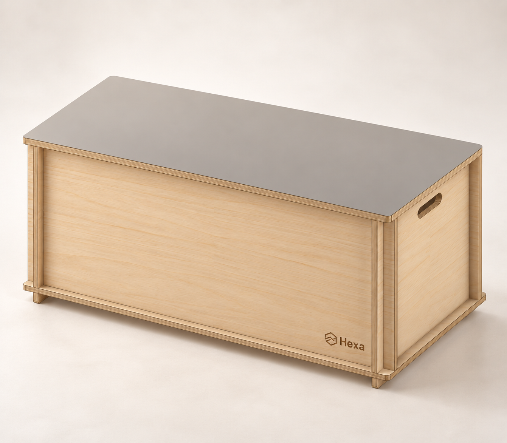
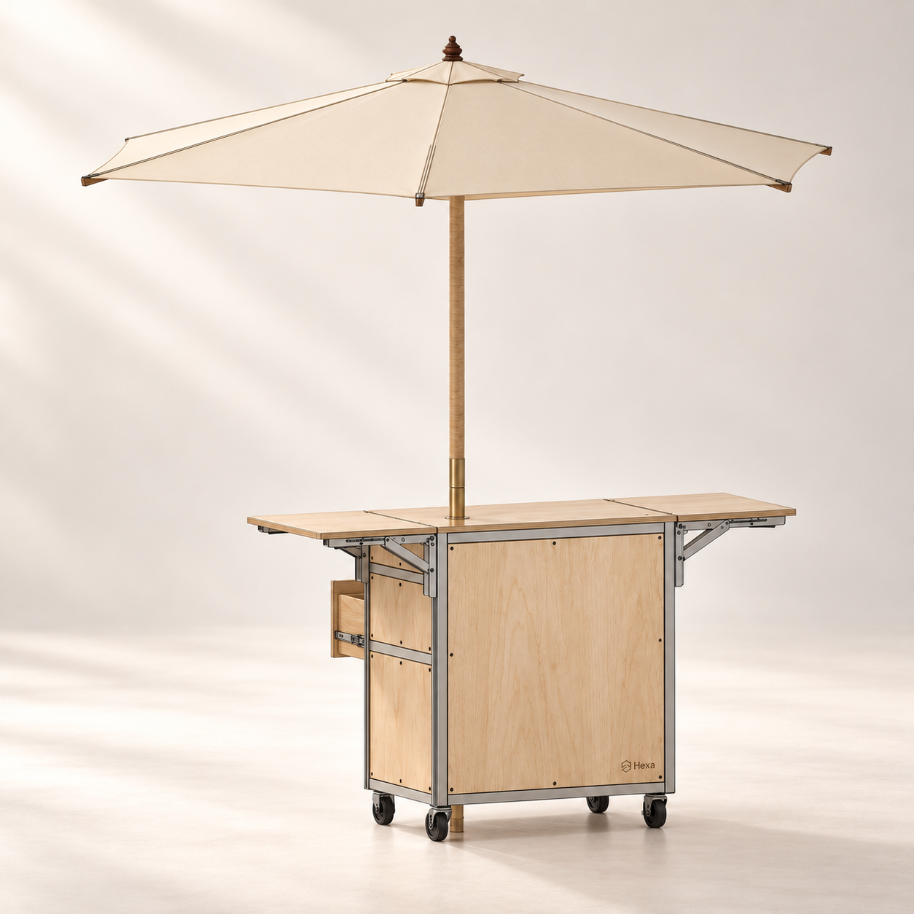
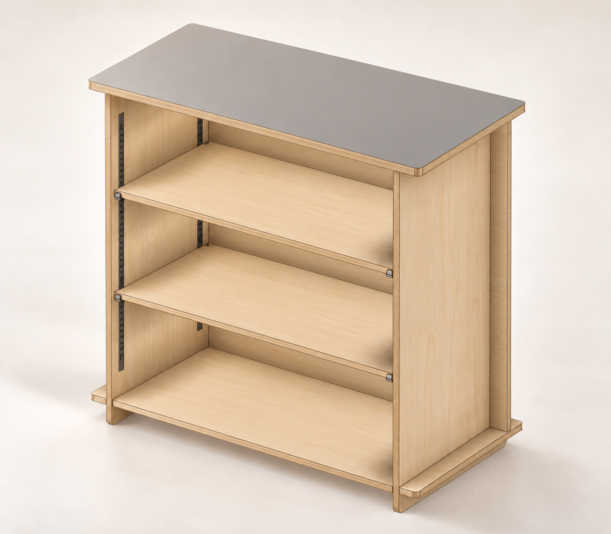
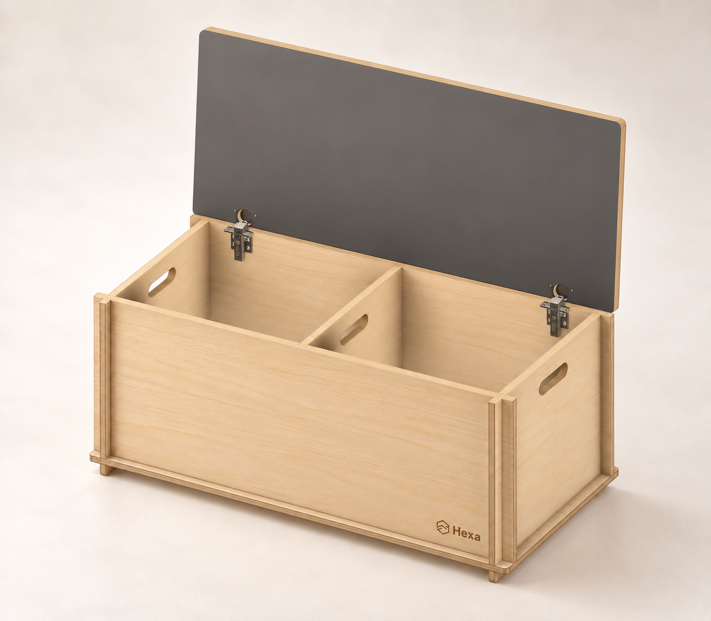
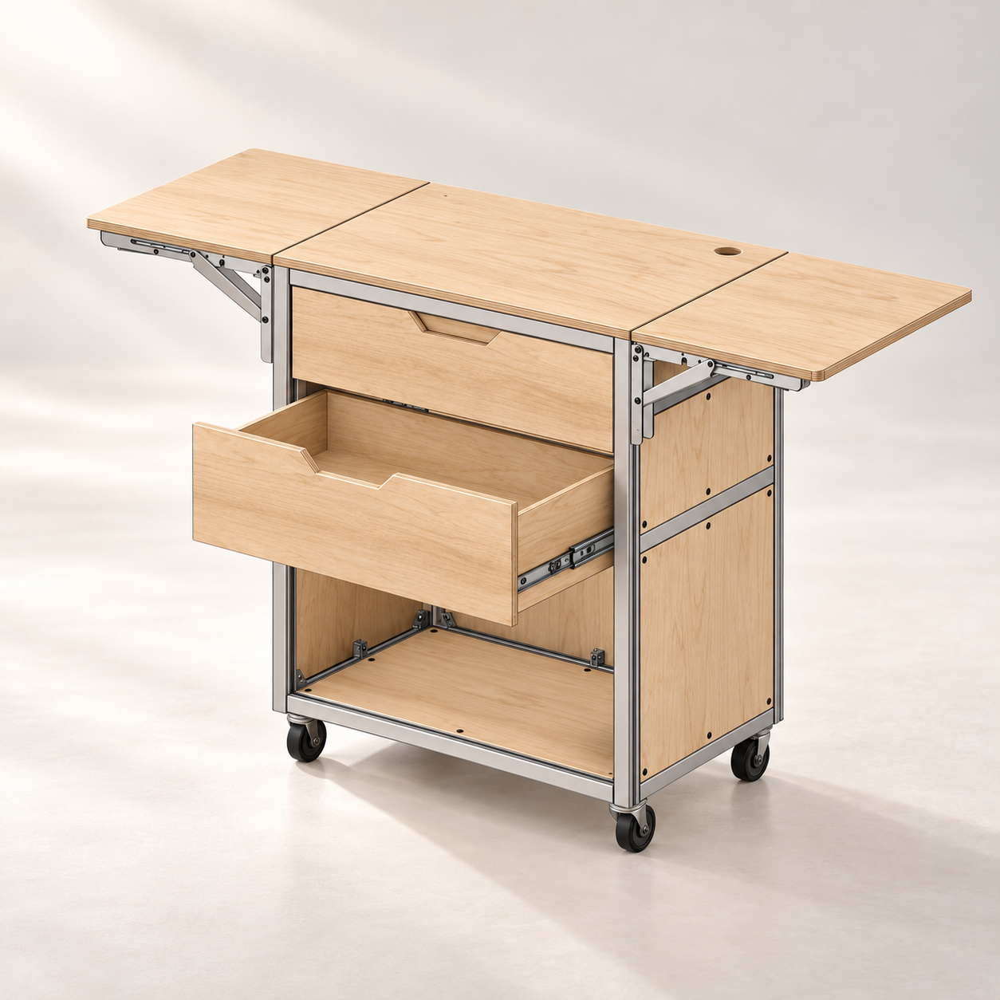
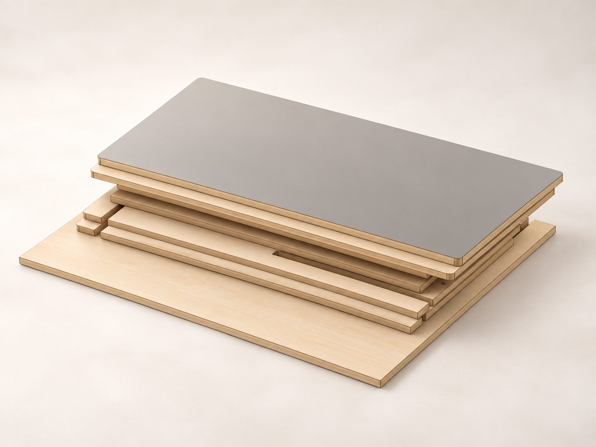
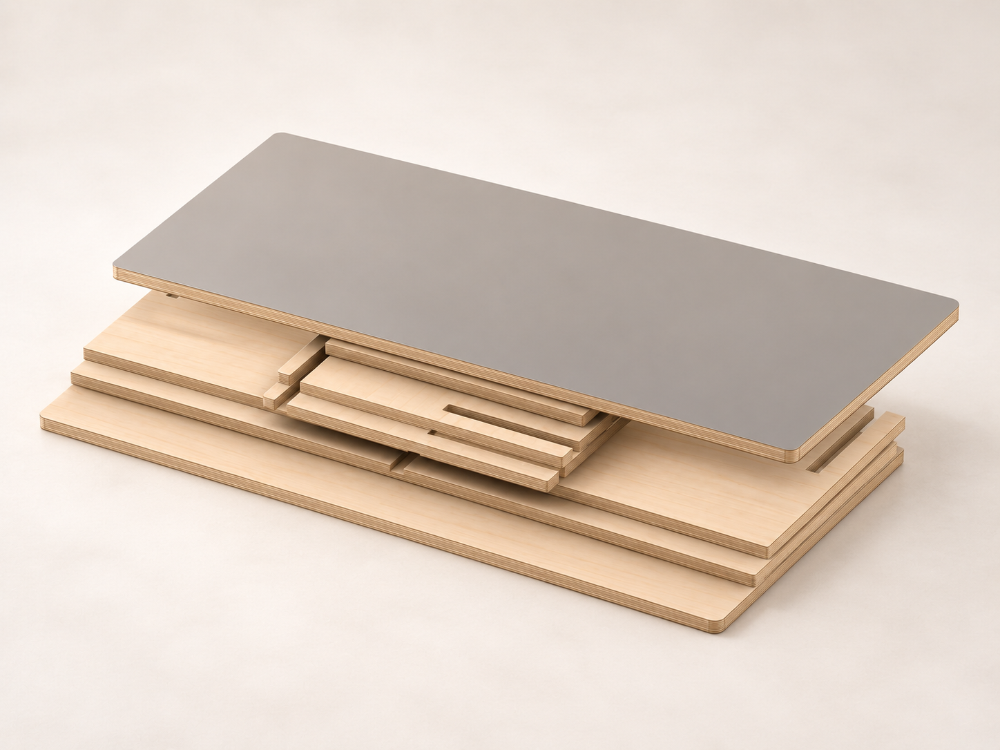

01 / Hexa MODULES
COUNTER
店先に、端正な佇まいを。
接客する正面と、道具を収める背面。見せる場所と使う場所を、一台に。
¥114,000税込・送料別
- SIZE
- W902 × D454 × H850 mm
- MATERIAL
- バーチ合板 / 天板：18mm・Volcanic Gray メラミン
Hexa MODULES / KIOSK
木の温もりと、端正な輪郭。光や緑、まわりの風景になじみながら、Hexaは一歩引いて、並ぶ商品を丁寧に見せる。小さな店先を、その品にふさわしい景色に。


01 / Hexa MODULES
接客する正面と、道具を収める背面。見せる場所と使う場所を、一台に。
¥114,000税込・送料別

02 / Hexa MODULES
腰掛ける場所の下に、備品の居場所を。店先に、人が留まるきっかけをつくります。
¥82,000税込・送料別

03 / Hexa MODULES
左右に広がる天板と、手元の引き出し。準備から接客までを支える、店の中心に。
¥247,000税込・送料別

高さを調節できる棚で、道具やストックを使いやすく。

座面を開ければ、仕切りのある収納スペース。店先の道具をすっきり収めます。

引き出しと下部収納、移動を支えるキャスター。小さな店の動線を考えました。
火山灰を思わせる落ち着いたグレー。主張を抑えた色合いが、さまざまな素材や色と調和し、空間に洗練された印象を添えます。
Counterの天板とBenchの座面に。Kioskはバーチの木目を生かした天板です。
CounterとBenchは、木部を分解してフラットに。出店先へ持ち運ぶことも、使わない時間の収納も考えた構造です。


MADE TO ORDER
受注生産・納期約2〜3ヶ月。表示価格は税込、送料別です。
木部はOSMO屋外用クリア仕上げ。完成品でのお届けです。写真は製品の使用イメージで、細部は実製品と異なる場合があります。パラソル・コーヒー機器・食器などの撮影小物は含まれません。